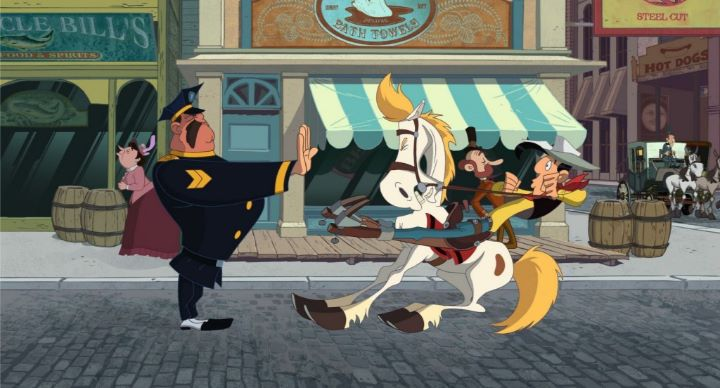

Officially, the 2007 animated movie "Go West! A Lucky Luke Adventure" was never released in English for American audiences. However, a lucky tie to Canadian audiences allowed me the chance to buy a copy on DVD.Here's a bit of background: Lucky Luke is a classic Belgian comic-book character, created in 1946 by Morris, and featuring in a collection of comics a decade later by Moris and Goscinny (the creator of Asterix). Luke is a stereotypical cool-American cowboy that wanders the old west as a bounty hunter, often compared to other classic European comics like Asterix (the viking) and Tintin (the young detective and adventurer). Aside from old comics, films and television episodes, Lucky Luke would get a revival in a new animated series in the early 2000's by Xilam Studios. Since it was French, it was a great fit for French-Canadians, whom the Canadian government constantly tries to provide content for. An English dub for the series also aired on a Canadian Aboriginal cable channel, which I remember as a interesting discovery (I also grew up with the comics). Anyway, Xilam proceeded to make a theatrical film for their new Lucky Luke series called "Go West!" Again, it was easy to market to French-Canada (even getting a custom French dub for Quebec), even getting a localized DVD release, but it never got a release in America. If the tv series was dubbed in English, was it possible that the film also had an English track? I took a chance and bought the French-Canadian DVD, and sure enough, it did! Like the show, it's a poor English dub, but enough to understand the story and jokes. Lucky me!Loosely based on an existing comic arc, the story of "Go West!" features Lucky Luke about to bring the Dalton brothers (a classic band of goofy outlaws) back to jail, when a group of European immigrants beg the famous Luke to escort them on their journey to California. This is in the 1880's, so the dangerous journey will take several weeks: they have to get there within 80 days to claim a promise of free land. Reluctantly, Luke agrees, taking the Daltons along with them. Of course, the land-deal is a scam, and the scammer tries his best to ruin the journey, failing each time. The style of "Go West!" can be best described as a modern Looney-Tunes cartoon. The villain's name is Mr. Crook, and his attempts to win the day are reminiscent of Wile E. Coyote. Occasionally a few clever puns are made (with a rough translation in English). A English teacher among the immigrants quietly falls in love with Luke. There's a mine-cart chase scene near the end. You get the idea.It's worth noting that the original Lucky Luke comics would be a little controversal today: Luke normally smokes, and Indians and Africans are portrayed with bad stereotypes. A little of this gets in the movie, but the studio was smart to update it as much as they could while still trying to remain faithful. The cartoonish-sense of humor is probably more fun for kids, but can get a little boring for adults. Thankfully, the animation is enough of a treat to keep everyone's attention. Remember, we didn't get many 2D animated films ater 2005, and "Go West!" is a beautiful post-renaissance example, resembling some of Walt Disney's stylish early-2000's films. Characters are distinct, and animation is smooth. It's not quite as refined as the best American animation, but Xilam has great confidence in their output. The music is super fun and put to its best use during the opening jail-escape scene, lending a lot to the tone. The English dub... isn't really all that bad given the circumstances, but detailed mouth movement make it difficult to lip-sync, so dialogue writing suffers a good deal. It's a stretch to call "Go West! - A Lucky Luke Adventure" great. Even though I personally have fond memories of the character, I felt the pacing and humor was a little dry, despite all the frantic animation (I attribute this almost entirely to France being the primary audience, and to the English translation). But it is a refreshing international cartoon. And if you like cartoons (not just artsy "animation"), you'll be pleasantly surprised, and most likely, kids in the room will have a great time.
- "Ani" More reviews can be found at : https://2danicritic.github.io/ Previous review: review_Gleipnir Next review: review_Goblin_Slayer